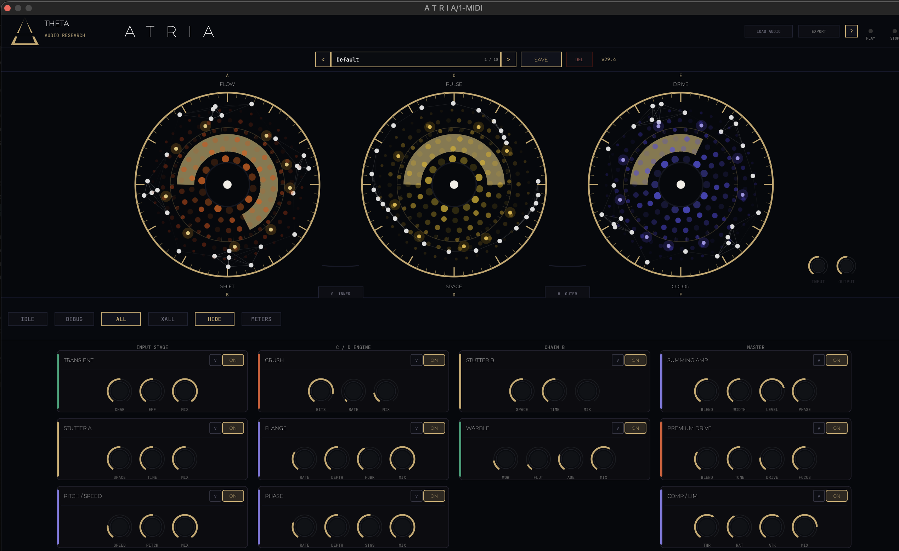

ATRIA
Sonic Exploration Engine

ATRIA by THETA Audio Research is a performance-first creative FX instrument built to turn static sound into living motion. Rather than presenting a flat panel of technical controls, ATRIA is organized around three macro rings that reshape sound through gesture. Each ring is built around a musical behavior: time, motion, and energy. This makes ATRIA fast to explore, immediate to perform, and capable of dramatic results without losing clarity. The sound engine behind ATRIA combines a tightly focused set of transformation tools: transient shaping, stutter processing, pitch and speed manipulation, crush, flange, phase, warble, premium drive, and compression/limiting. Together, these modules let ATRIA move between subtle dimensional enhancement and aggressive sonic disruption. It can add instability, rhythmic interruption, spectral movement, harmonic weight, modulation, and impact — all inside one unified instrument. What makes ATRIA different is not just what it does, but how it feels to use. The interface is layered around performance. The rings remain the primary surface, giving you immediate access to broad musical change, while deeper module controls appear contextually when needed. That gives ATRIA depth without sacrificing instinct. It stays playable, fast, and expressive. Visually, ATRIA follows the THETA Audio Research design language: dark, technical, restrained, and premium. The interface pairs a deep “Void” backdrop with signal-focused accents and a disciplined typography system, creating a plugin that feels more like a purpose-built instrument panel than generic software. ATRIA is for producers, composers, and sound designers who want movement, tension, texture, and transformation — not just another effect chain. It is built for moments when a sound needs to breathe, bend, break apart, surge forward, or come alive under the hand. ATRIA turns processing into performance.